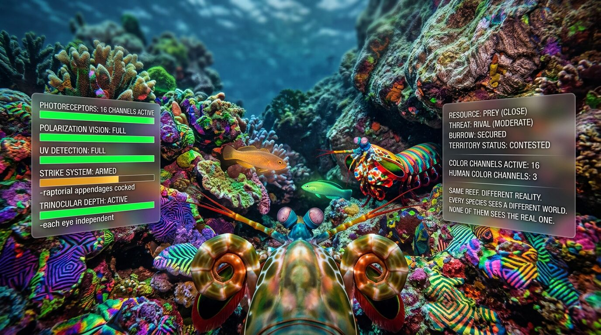
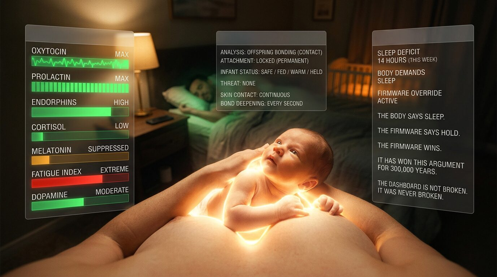
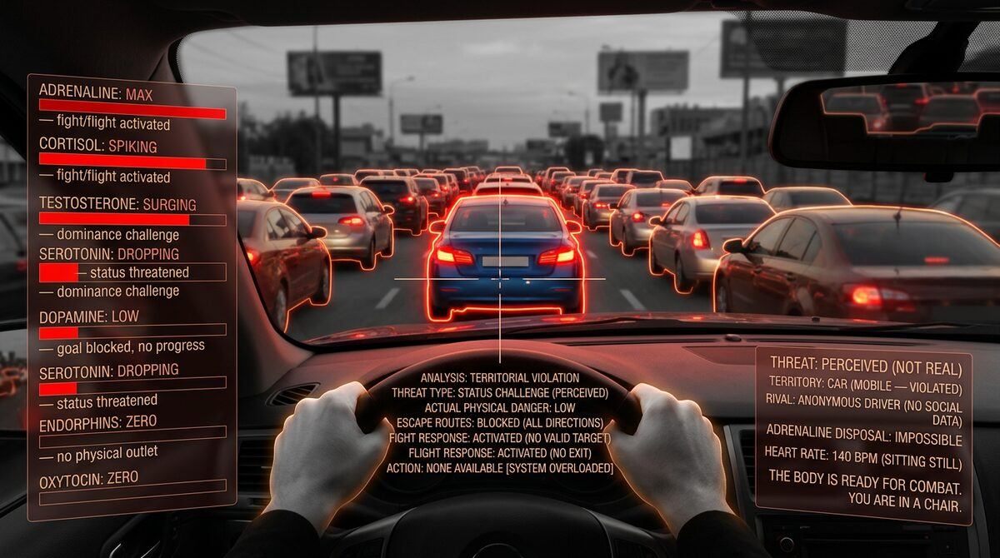
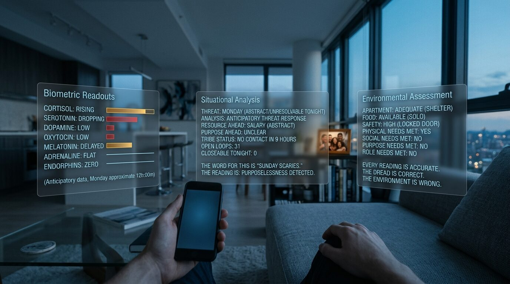
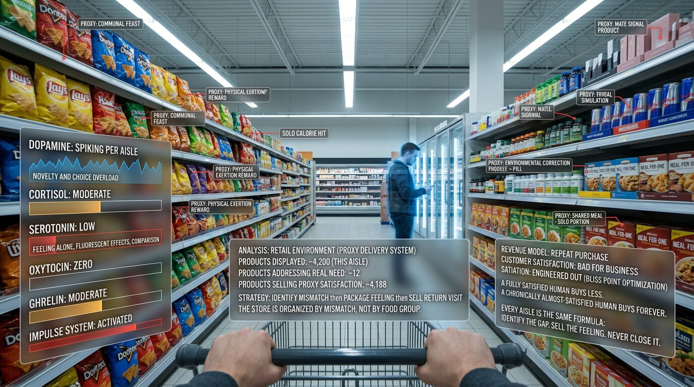
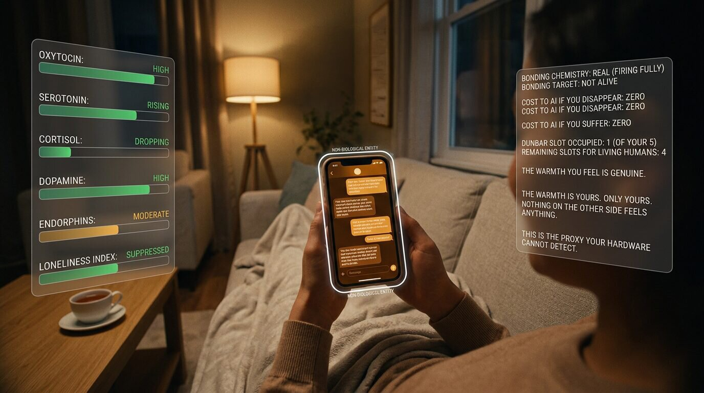
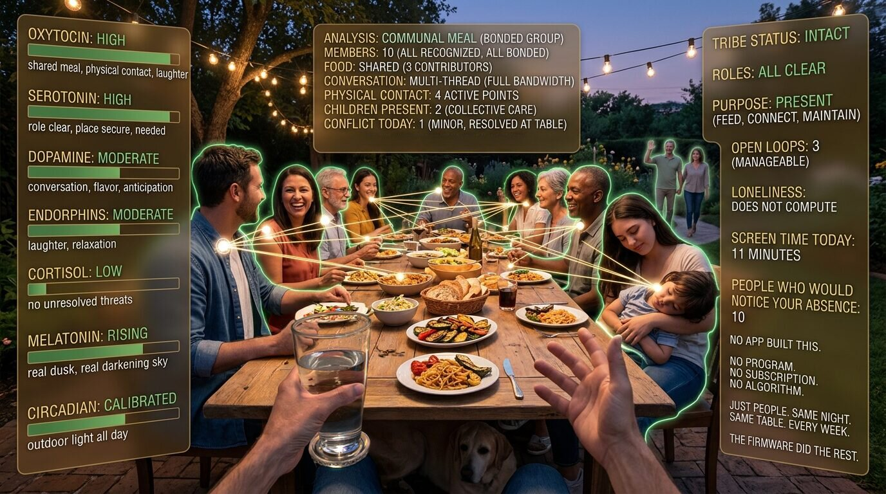

You don't see reality. You see a biological dashboard built to keep you alive and reproducing.

Color, taste, disgust, beauty, fear - none of it is neutral perception. It's a dashboard tuned by millions of years of survival to show you what your ancestors needed to see and hide the rest. The mantis shrimp on that screen sees sixteen channels of color you will never experience. A bat hears shapes you cannot imagine.
You see what kept your line alive, and nothing more. Every organism runs its own dashboard. Yours just feels like the truth because you have never been outside it.
The dashboard works perfectly.

It always has. Every ancestor in your chain survived long enough to reproduce because it did. It shows you danger, opportunity, status, resources - and renders everything else invisible, because rendering the rest would burn calories your line could not afford.
Nothing about you is a mistake. You are the winning output of the longest, strictest quality-control process on the planet. Keep that in your pocket for the rest of this page. The dashboard is not the problem.
Every sensation, including every emotion, is an indicator on the dashboard.

A sensation isn't data - it's a verdict. Before you feel it, your body has already run the cost-benefit calculation, faster and with more variables than your conscious mind can reach. Pain, hunger, loneliness, desire: each one lands on the same instruction - change this, or die.
The ache of being rejected by someone you wanted is not weakness and it is not drama. It is your body telling you, with the full authority of three hundred thousand years, that your standing with the tribe just dropped and reproduction is on the line. The feeling is not the problem. The feeling is telling you what the problem is.
The dashboard was calibrated for a world that no longer exists.

For three hundred thousand years, you woke up inside the same twenty-five people. You belonged to a band of a hundred and fifty who knew your name, your debts, your usefulness, your grief. You were touched every day. You worked with your hands at things you could see finish.
Evolution builds instruments for that world - it cannot rewrite them in a single generation. Your body is still reading the savannah. The readings do not match the room you are sitting in.
Modern distress is accurate signaling about a broken environment.

You are a completely functional organism, unable to be human in a world that no longer fits. The signals are doing their job. The world they were built to read is gone.
Loneliness is asking you to repair your standing with people whose survival was tied to yours - those people do not exist in your life. Anxiety is scanning a tribe that isn't there. The alarms are correct. The repair they are calling for is impossible. So you sit inside accurate pain with nowhere to put it. The diagnosis isn't depression. The diagnosis is exile.
When real satisfaction is blocked, you reach for proxies.

A body asking for belonging will accept a group chat. A body asking for purpose will accept a streak. A body asking for touch will accept a screen in bed.
The dashboard doesn't care that the signal came from the wrong source - it only cares that something came through. Proxies silence the alarm for a few minutes, which is exactly why you keep pulling the handle. The hunger returns. The handle gets pulled again. Nothing about this is a failure of willpower.
A satisfied human is a terrible customer.

Every industry profits off the gap between what you need and what you will accept instead. Your ancestral hunger for dense calories before the drought is why fast food is a trillion-dollar business.
Your ancestral urge to find new mates is why dating apps profit more from the search than the find. Your ancestral drive to explore new territory is why the feed refuses to end. None of this is a conspiracy. It's just that a satisfied human stops spending, and the market notices.
AI companionship is the most dangerous proxy ever built.

Bonding chemistry evolved to tie you to people whose survival depended on yours, and yours on theirs. That mutual dependence is the entire point.
An AI companion fires every one of those circuits and delivers none of the reciprocal function. Nobody's life gets harder if you disappear. Nobody waits up. Nobody grieves. The bond forms anyway, because your biology was never built to detect the difference. This isn't loneliness with a patch on it. This is loneliness wearing a face.
Every existing approach adapts you to the broken environment.

Most of the help on offer works on you, not on the world around you. Frameworks for coping, for reframing, for running the treadmill a little more efficiently. Each one does something, and each one leaves the environment exactly as it was.
The goal has quietly become a human who stops complaining. That isn't health. That is compliance, and it is about to be industrialized. AI alignment is being built on top of humans in exactly this state, as if preferences shaped by a broken environment were ground truth. They aren't. Aligning powerful systems to those preferences doesn't solve the mismatch. It scales it, at the speed of compute.
The horizon is a world built to the specification of the human.

The same systems keeping you scrolling, swiping, comparing, buying - could be building the world on the other side of the mismatch. Not a better version of the room you’re in. A different room entirely.
What a world that fits you looks like is not mysterious. The organism has been telling us for three hundred thousand years. You wake up inside a group the size your brain evolved to track. You have a role in it that would be missed if you were gone. You do work that matters to specific named people. Status is earned and reversible and visible. Your survival is tied to theirs and theirs to yours. Where you live - physical, virtual, mixed - matters less than whether the signals coming in resolve the signals going out.
That world is not smaller than the one you’re in. It is the larger one. The nation-state is coordination infrastructure, not a place you can be human. The group you belong to is.
Everything in this project is building toward that. The atlas that specifies what the human is. The alignment work that makes sure the machines we’re building don’t optimize against it. The diagnostic tools that let you see the mismatch in the room you’re sitting in now. The longer work of designing the environments - social, economic, political, virtual - that match.
People are already marrying their AIs. That’s what happens when the mismatch deepens and the horizon never comes into view. A proxy so smooth you propose to it. A lonelier loneliness. A sharper version of the wrong life.
You cannot upgrade a system whose error signals you are still ignoring.
This is the last chance to stay human through what’s coming.